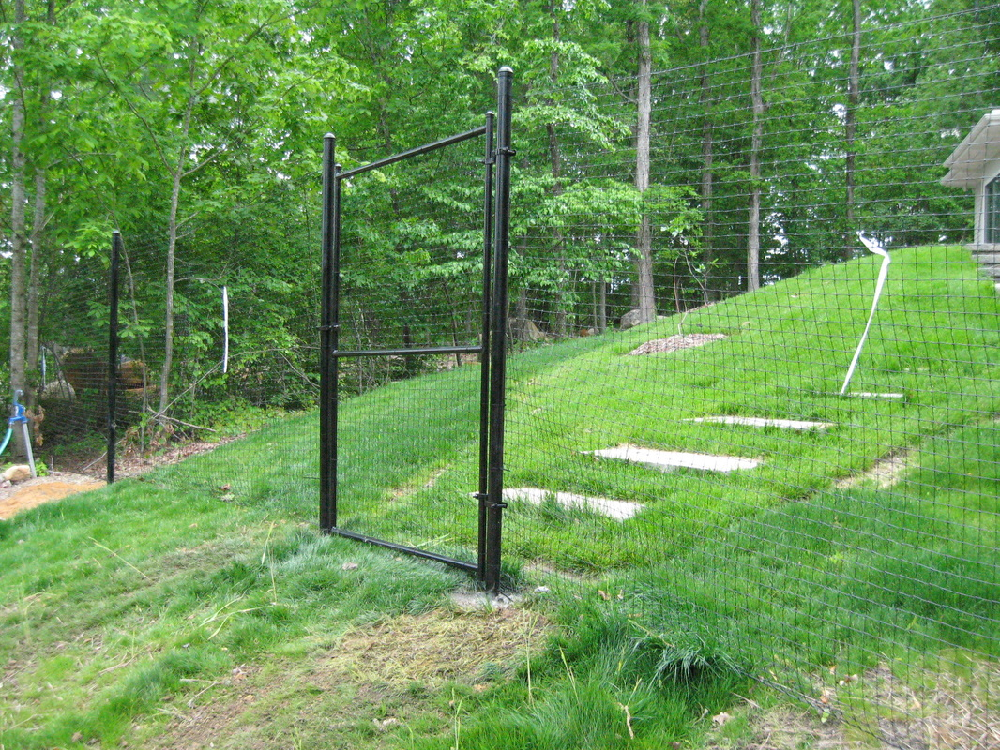
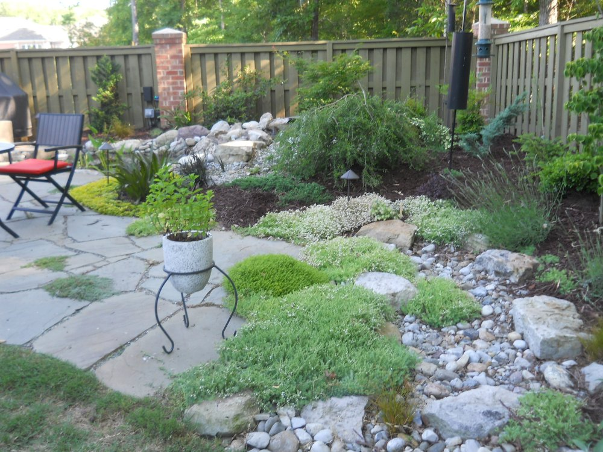

Landscaping Installations
Our installation services bring your vision to life using native plants, sustainable practices, and thoughtful craftsmanship. Whether you're looking for a complete transformation or focused upgrades, our work is grounded in ecological integrity.
Transforming Outdoor Spaces
Precision, care, and ecological integrity in every project

Hardscaping
Basic walks, paths and patios are done in house. Others would be sent out to contractors who specialize in those tasks.
- ✓Custom Walkways
- ✓Patio Installation
- ✓Professional Partnerships

Bed Preparation
Plant Bed Preparation typically involves removal of existing vegetation, tilling and amending soil, incorporating organic matter to improve water infiltration and plant growth. Proper planting of appropriate plants, and the right mulch.
- ✓Vegetation Removal
- ✓Soil Enhancement
- ✓Organic Integration

Deer Fencing
Professional deer fencing solutions to protect your valuable plantings and gardens. We install durable, aesthetically pleasing barriers that effectively deter deer while maintaining the beauty of your landscape.
- ✓Garden Protection
- ✓Durable Materials
- ✓Aesthetic Design

Invasive Plant Removal
Expert identification and removal of invasive plant species that threaten native ecosystems. We use environmentally responsible methods to restore natural balance while preventing future invasions.
- ✓Species Identification
- ✓Eco-Friendly Methods
- ✓Prevention Strategies
Ready to Transform Your Landscape?
Let's discuss your project and create something beautiful together
How We Work
As a licensed landscape contractor in North Carolina, I operate with a small and skilled crew — usually just myself and two employees. We specialize in expert pruning, plant selection, and soil health.
Licensed NC Landscape Contractor #CL1446
Landscape improvements and installations: $50 per person hour.
Estimates and contracts are available for larger-scale projects.
Lighting, irrigation and arborist tree services are performed by licensed, insured contractors that I have worked with numerous times and trust.